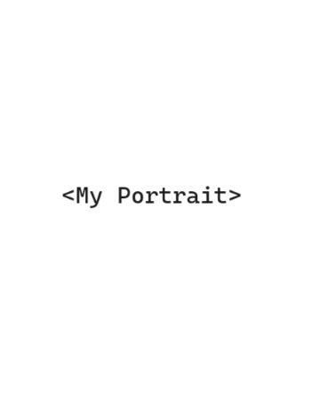
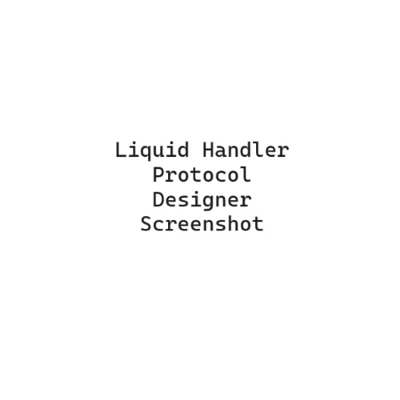
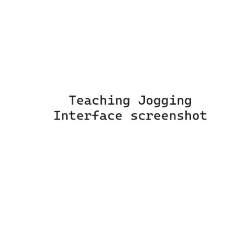
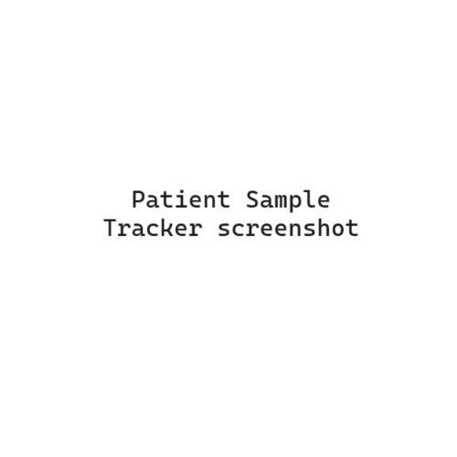

Nolan Teasdale-Schafle
About Me
- Multi-disciplinary engineer passionate about BioPharma
- Loves building full-stack SW applications for biopharma experiments and data management
- Has 5+ years of hands-on experience with liquid handlers, pipetting, thermal cyclers, & other laboratory devices
- Dreams of creating SW features for medical diagnostics
- Plants makes me happy!

Projects
- Liquid Handler Protocol Designer

- Teaching jog interface

- Patient sample tracker

Skills
- HTML/CSS
- JavaScript
- Python
- SQL
- Linux
- Git
- C#
- Hamilton Venus
- HighRes Solution (Prime)